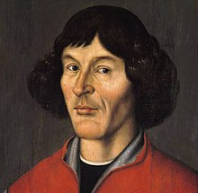

Here, we provide basic information about astronomy for both adults and children, including images and descriptions of famous telescopes (radio and optical) as well as brief biographies of famous historical astronomers.
Astronomy Basics
Famous Telescopes
Reber Radio Telescope
The telescope was built by astronomer Grote Reber in his back yard in Wheaton, Illinois in 1937, following up on the research of Karl Jansky, the discoverer (in 1933) of radio waves emanating from the Milky Way. It was the second radio telescope ever built (after Jansky's dipole array), and the first parabolic radio telescope, serving as a prototype for the first large dish radio telescopes such as the Green Bank Telescope and Lovell Telescope constructed after World War II.
Hubble Space Telescope
Named in honor of the trailblazing astronomer Edwin Hubble, the Hubble Space Telescope is a large, space-based observatory, which has revolutionized astronomy since its launch and deployment by the space shuttle Discovery in 1990. Hubble has made more than 1.5 million observations over the course of its lifetime. Over 19,000 peer-reviewed science papers have been published on its discoveries, and every current astronomy textbook includes contributions from the observatory.
Famous Historical Astronomers
Claudius Ptolemy
Ptolemy synthesized Greek knowledge of the known Universe. His work enabled astronomers to make accurate predictions of planetary positions and solar and lunar eclipses, promoting acceptance of his view of the cosmos in the Byzantine and Islamic worlds and throughout Europe for more than 1400 years. Ptolemy accepted Aristotle’s idea that the Sun and the planets revolve around a spherical Earth, a geocentric view. Ptolemy developed this idea through observation and in mathematical detail.

Nicolaus Copernicus
Nicolaus Copernicus (1473–1543) was a mathematician and astronomer who proposed that the sun was stationary in the center of the universe and the earth revolved around it. Disturbed by the failure of Ptolemy’s geocentric model of the universe, Copernicus decided that he could achieve his goal only through a heliocentric model. He thereby created a concept of a universe in which the distances of the planets from the sun bore a direct relationship to the size of their orbits. At the time Copernicus’s heliocentric idea was very controversial; nevertheless, it was the start of a change in the way the world was viewed, and Copernicus came to be seen as the initiator of the Scientific Revolution.
Galileo Galilei
From the seventeenth century onward, Galileo has been seen by many as the “hero” of modern science. He is renowned for his discoveries: he was the first to report telescopic observations of the mountains on the moon, the moons of Jupiter, the phases of Venus, and the rings of Saturn. He invented an early microscope and a predecessor to the thermometer. In mathematical physics—a discipline he helped create—he calculated the law of free fall, conceived of an inertial principle, determined the parabolic trajectory of projectiles, and advocated the relativity of motion.

Johannes Kepler
Kepler used simple mathematics to formulate three laws of planetary motion. Kepler's First Law stated that planets move in elliptical paths around the Sun. He also discovered that planets move proportionally faster in their orbits when they are closer to the Sun; this became Kepler's Second Law. Finally, Kepler's Third Law explained the relationship between the distance of a planet from the Sun and the amount of time it took to orbit the Sun. Together these laws of celestial mechanics revolutionized astronomy.